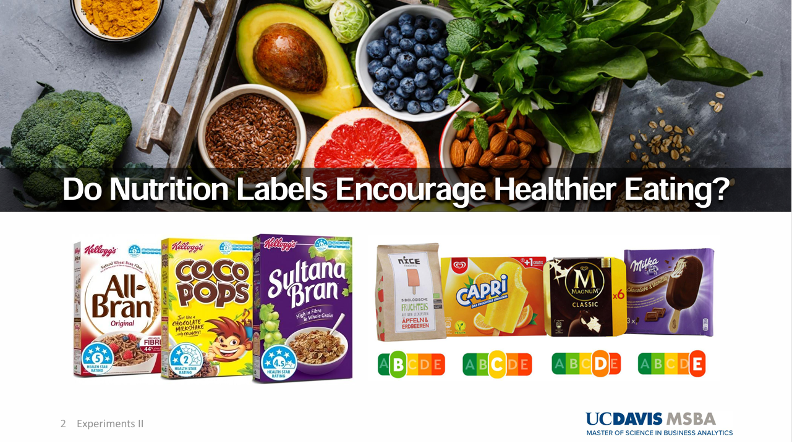

Statistics using R
1. Hypothesis Testing with Two-Sample Proportion Test
1. Figure

[Fig. Treatment Effects between New banner Ad and Old Banner Ad]
2. Goal
To test if the Click-Through-Rate (CTR) difference between Ad B (treatment group) and Ad A (Control group).
3. Hypotheses
Null Hypothesis (H₀): - The null hypothesis indicates Ad B is not effective than Ad A - The null hypothesis indicates the CTR (Click through Rate) of Ad B is less than or equal to the CTR (Click through Rate) of Ad A \[ H_0: p_B \leq p_A \]
Alternative Hypothesis (H₁): - The null hypothesis indicates Ad B is more effective than Ad A - The null hypothesis indicates the CTR (Click through Rate) of Ad B is more than the CTR of Ad A \[ H_1: p_B > p_A \]
4. Methodology & Summary
- Two Sample proportion z-test was used:
- Ad A and Ad B each had 500 samples.
- Success = clicking the ad (CTR).
- CTR of Ad A = 3% CTR and Ad B = 5.6% CTR.
- Result: p-value = 0.0307 rejecting the null hypothesis.
- Conclusion: At a 0.05 significance level, the p-value of 0.0307 indicates that the null hypothesis (Ad B is not more effective than Ad A) can be rejected. The p-value represents the probability of observing a result as extreme as, or more extreme than, the current outcome under the assumption that the null hypothesis is true. Since the p-value is less than the significance level, we have sufficient evidence to reject the null hypothesis, suggesting that Ad B is statistically significantly more effective than Ad A.
5. Code
#Q1
### Set seed to ensure we consistently generate the same results
set.seed(1)
### Create two random samples of A and B with sample size 500 respectively
### A and B are distributed binomial with sample means 0.03 and 0.05
### A and B follow binomial distributions while indicating 1 is success (clicking the Ad) and 0 is failure (not clicking the Ad)
nbin <- 500
A <- data.frame(CTR = rbinom(n = nbin, prob = 0.03, size = 1))
B <- data.frame(CTR = rbinom(n = nbin, prob = 0.05, size = 1))
### Sample counts, counting the success of clicking the Ad.
countA <- sum(A$CTR)
countB <- sum(B$CTR)
### Two-sample proportions z-test with one-sided test
prop.test(x = c(countB, countA),
n = c(nbin, nbin),
alternative = "greater")##
## 2-sample test for equality of proportions with continuity correction
##
## data: c(countB, countA) out of c(nbin, nbin)
## X-squared = 3.4993, df = 1, p-value = 0.0307
## alternative hypothesis: greater
## 95 percent confidence interval:
## 0.00294022 1.00000000
## sample estimates:
## prop 1 prop 2
## 0.056 0.030# Ad B is clicked 5% otherwise Ad A is clicked 3% on the time but this is very unlikely (only 3% based on the p-value) that
# this outcome can be gained under the assumption that the null hypothesis is true. Therefore, we suspect that the null hypothesis is not true.2. Hypothesis Testing with 10,000 Random Samples
1. Figure
[Fig. Treatment Effects between New banner Ad and Old Banner Ad]
2. Goal
To test if the mean Click-Through-Rate (CTR) between Ad A and Ad B is greater than 2.6%.
3. Hypotheses
Null Hypothesis (H₀):
The mean difference in CTR between Ad B and Ad A is less than or equal to 2.6%:
\[ H_0: \mu_B - \mu_A \leq 0.026 \]
Alternative Hypothesis (H₁):
The mean difference in CTR between Ad B and Ad A is greater than 2.6%:
\[ H_1: \mu_B - \mu_A > 0.026 \]
4. Methodology & Summary
- Two Sample proportion z-test was used:
- 10,000 random samples of size 500 were drawn for both Ad A and Ad B, assuming both had a mean CTR of 4.3%, which indicates that those samples are simulated under the assumption that the null hypothesis is true as the mean of each distribution is the same as each other.
- The mean CTR difference was calculated.
- If the mean difference exceeded 2.6%, the null hypothesis was rejected.
- Result: p-value = 0.0242 rejecting the null hypothesis.
- Conclusion: At a 0.05 significance level, the p-value of 0.0242 indicates that the null hypothesis (The mean difference between the two Ads is less than or equal to 2.6%.) can be rejected. The p-value represents the probability of observing a difference as extreme as, or more extreme than, 2.6% under the assumption that the null hypothesis is true. The probability of observing this extreme value (the mean difference between the two Ads greater than 2.6%) is 2.4%. Since the p-value is less than the significance level, we have sufficient evidence to reject the null hypothesis, suggesting that Ad B is statistically significantly 2.6% more effective than Ad A.
5. Code
### 10,000 random samples from binomial with mean 0.043, for both Ad A and AD B which fits the null hypothesis with Ad B not being more effective than Ad A
### 4.3% indicates the average CTR of A and B
### The purpose for this sampling is to identify whether CTR for Ad B is 2.6% larger than Ad A even if we got random samples for binomial distribution with the same average mean for both Ad A and Ad B.
set.seed(1)
### Create data frame for mean of samples
hypothesis <- data.frame(matrix(0, nrow = 10000, ncol = 4))
### Name columns
colnames(hypothesis) <- c('A', 'B', 'Dif', 'RejectH0')
for (x in 1:10000) {
# The sample mean is the same as 4.3% (CTR = 4.3%)
hypothesis$A[x] <- mean(rbinom(n = nbin, prob = 0.043, size = 1))
hypothesis$B[x] <- mean(rbinom(n = nbin, prob = 0.043, size = 1))
# The difference in CTR between A and B
hypothesis$Dif[x] <- hypothesis$B[x] - hypothesis$A[x]
# If the CTR of B is greater than 2.6% than A, we reject the null hypothesis.
hypothesis$RejectH0[x] <- ifelse(hypothesis$B[x] - hypothesis$A[x] > 0.026, 1, 0)
}
# The summary table of the result for this hypothesis testing.
summary(hypothesis$RejectH0)## Min. 1st Qu. Median Mean 3rd Qu. Max.
## 0.0000 0.0000 0.0000 0.0242 0.0000 1.00003. Random Sampling
1. Figure

[Fig. How Sample Mean Evolves as Sample Size Increases]
2. Goal
- To demonstrate how the sample mean evolves as the sample size
increases, and how the population variance affects the variability of
sample means.
- The sample mean becomes closer to the true population mean as the sample size increases.
- The stability of sample means improves when sampling from populations with lower variance.
3. Methodology
- Setup:
- Two populations are sampled, both with a mean of 70 but with
different variances.
- Population 1: Variance = 36 (Standard Deviation = 6)
- Population 2: Variance = 9 (Standard Deviation = 3)
- Sample sizes range from 1 to 100.
- Two populations are sampled, both with a mean of 70 but with
different variances.
- Process:
- Random samples are drawn from each population for each sample size (1 to 100).
- The sample means are calculated and stored for both populations.
- Process:
- The sample means are plotted against sample sizes to observe trends.
- Red Line: Population with larger variance (36)
- Blue Line: Population with smaller variance (9)
- Conclusion:
- When the population variance is larger and sampling from this population, the sample means vary largely when the sample size is smaller. This variance is getting smaller when the sample size increases. In contrast, if the population variance is smaller and random samples from this population, there is less variability in the sample means compared to the first random sampling from the population with larger variance. The sample mean of the second population gets closer to the population mean which is 70 rapidly while showing greater stability even when the sample size is small.
4. Code
### Set seed to ensure we consistently generate the same results
set.seed(1)
### Create data frame to store the means of the samples
sample_example <- data.frame(matrix(0, nrow = 100, ncol = 3))
### Name columns
colnames(sample_example) <- c('ssize', 'mean1', 'mean2')
# Create random samples from a normal distribution with mean = 70 but with different variance
# Sample sizes range from 1 to 100
for (x in 1:100) {
# Generate random samples for two sets from the normal distribution with the same mean 70 and different variances. The first sample has 70 as mean and 36 as variance. The second sample has 70 as mean and 9 as variance.
sample_run1 <- data.frame(sample = rnorm(x, 70, 36))
sample_run2 <- data.frame(sample = rnorm(x, 70, 9))
# Store the sample size
sample_example$ssize[x] <- x
# Calculate the means of the samples and store them
sample_example$mean1[x] <- mean(sample_run1$sample)
sample_example$mean2[x] <- mean(sample_run2$sample)
}
# View the results
head(sample_example)## ssize mean1 mean2
## 1 1 47.44766 71.65279
## 2 2 83.67374 67.79068
## 3 3 91.61842 74.78871
## 4 4 54.19651 75.27123
## 5 5 72.92430 66.86281
## 6 6 68.78623 71.48757# When the sample size is the same in each row, if the standard deviation is smaller, we could get more stable sample means closer to the population mean 70.### Plot X=Sample Size, Y = mean
library(ggplot2)
ggplot() +
geom_line(data=sample_example, aes(x=ssize,y=mean1), color="red")+
geom_line(data=sample_example, aes(x=ssize,y=mean2), color="blue")+
ggtitle("How sample mean evolves as sample size increases") +
theme(plot.title = element_text(hjust = 0.5)) +
labs(x='Sample Size',y='Sample Mean')
4. Multi-Armed Bandit
1. Definition
- The Multi-Armed Bandit approach tests multiple levers (e.g.,
advertisements) to identify the best lever offering the highest
compensation. In this case:
- 4 advertisements are tested to determine the one with the highest CTR (Click-Through Rate).
- Fisher’s exact test is used instead of the proportion test when sample sizes (exposures of advertisements) are low.
2. Goal
To identify the advertisement with the highest CTR and evaluate whether any other advertisements can serve as suitable alternatives.
3. Methodology
- Setup:
- Four advertisements (Ad1, Ad2, Ad3, Ad4) are initialized with
baseline CTRs:
- Ad1: 2.5%, Ad2: 1%, Ad3: 0.5%, Ad4: 1.5%.
- The best advertisement starts with the highest baseline CTR.
- Four advertisements (Ad1, Ad2, Ad3, Ad4) are initialized with
baseline CTRs:
- Dynamic Sampling:
- Advertisements are exposed probabilistically, with higher probabilities assigned to the current best-performing ad.
- A random click (1 for success, 0 for failure) is generated based on the CTR of the selected ad.
- Updating Beliefs:
- Clicks and exposures are updated after each trial.
- CTR for each advertisement is recalculated:
- CTR (Click-Through Rate):
\[ \text{CTR} = \frac{\text{Clicks}}{\text{Exposures}} \] + CTR represents the ratio of the number of clicks to the number of times an advertisement was shown (exposures).
- Testing Significance:
- Once all advertisements have at least 10 exposures, Fisher’s test is applied:
- Null Hypothesis (\(H_0\)):
- Alternative Hypothesis (\(H_1\)):
- Advertisements with p-values < 0.05 are removed due to significant differences from the best ad.
- Conclusion:
- The process continues until only the best advertisement and its close alternatives (if any) remain.
- The first advertisement has the highest CTR and there are no suitable alternatives with similar CTR compared to the best choice.
4. Code
# Choose 4 advertisements
N_ARMS = 4
# Identifier for each advertisement
ARMS = c(1,2,3,4)
# Set the baseline CTR for each advertisement
base_rates = c(.025,.01,.005,.015)
# Before the experiment, the first advertisement has the highest CTR
best = 1
# Initialize the number of clicks, the number of advertisement exposure, and CTR (the number of clicks / the total number of advertisement exposure)
clicks <-c(0,0,0,0)
draws <-c(0,0,0,0)
CTR <-c(0,0,0,0)
options(warn=-1)
set.seed(1)
while(N_ARMS>1){
# Generate a random draw of ad from proportion .5 best, else other)
# Set arm probabilities
# Except for the best advertisement, 0.5 probabilities divided by remaining advertisements
epsilon = .5/(N_ARMS-1)
chosen_arm_p = c(0,0,0,0)
for (i in 1:length(ARMS)) {
chosen_arm_p[ARMS[i]]=epsilon
}
# Assign 0.5 exposure probability for the best advertisement
chosen_arm_p[best]=.5
# Choose the probability as the threshold to pull the arm
choicep <- runif(1, min = 0, max = 1)
choice=0
# Choose the advertisement when the choice probability generated by uniform distribution is included in the cumulative range for each advertisement
# If one of the advertisements is selected, choice == 0 is not satisfied and the for loop is ended.
for (i in 1:length(ARMS)) {
if (choicep<=sum(chosen_arm_p[1:ARMS[i]]) & choice==0){choice=ARMS[i]}
}
# Generate click or not click using CTR for each advertisement set above
# click has 1 (click) or 0 (not click) for one exposure
click <- rbinom(n=1,prob=base_rates[choice],size=1)
# Update beliefs about frequency
# Accumulate the number of clicks for each advertisement
clicks[choice] <- clicks[choice]+click
# The number of exposure increments by 1 for every trial
draws[choice] <- draws[choice]+1
# If the exposure is 0, the value is returned as 0 whereas CTR is calculated as clicks[choice] / draws [choice]
CTR[choice] = ifelse(draws[choice]==0, 0, (clicks[choice]/draws[choice]))
# Re-assign best
best=0
# CTR object stores the CTR for each advertisement and find the best advertisement with the max CTR value
for (i in 1:length(ARMS)) {
if (CTR[ARMS[i]]==max(CTR) & best==0){best=ARMS[i]}
}
# Test for significant difference between the best advertisement and the rest of the options
# Remove all for which p-value <0.05, indicating that there is significant difference between the best and other option
# Only remove once each alternative has been drawn at least ten times
# prop.test inappropriate and gives error if samples are too small
# The minimum exposure for each advertisement is greater than 10
if (min(draws)>10) {
keep = c()
for (i in 1:length(ARMS)) {
if (ARMS[i]!=best) {
# The null hypothesis for the prop.test is CTR(best) is greater or than or equal to CTR(alternative) and the alternative hypothesis is CTR(best) is less than CTR(alternative).
# If the null hypothesis is rejected, that alternative should be removed because there is statistically significant difference between the two. However, in this example. prop.test cannot be used due to lower exposure. Chi-squared test may not be appropriate when numerator is zero or very low.
# Fisher's test should be used
result<-fresult <- fisher.test(
matrix(
c(clicks[best], clicks[ARMS[i]],
draws[best] - clicks[best], draws[ARMS[i]] - clicks[ARMS[i]]),
nrow = 2
),
alternative = "greater"
)
if (result$p.value>.05) {keep=c(keep,ARMS[i])}
}
if (ARMS[i]==best) {keep = c(keep,best)}
}
N_ARMS = length(keep)
ARMS=keep
}
}
ARMS ## [1] 1rbind(base_rates, CTR)## [,1] [,2] [,3] [,4]
## base_rates 0.02500000 0.01 0.005000000 0.0150000
## CTR 0.02311007 0.00 0.003984064 0.0158883draws## [1] 2553 151 251 20775. Instagram Ads A/B Testing (Disney)
1. Figure

[Fig. Decide whether to continue on the Ad based on Incremental Conversion Rate]
2. Goal
To identify whether any treatment effect represented by Incremental Conversion Rate (ICR) is positive.
3. Hypotheses and Formula of ICR
The Incremental Conversion Rate (ICR) is defined as:
- ICR (Incremental Conversion Rate):
\[ \text{ICR} = \text{Conversion_Rate(Treatment)} - \text{Conversion_Rate(Control)} \]
Treatment group: Exposed to the advertisement.
Control group: Not exposed to the advertisement.
Null Hypothesis (\(H_0\)):
\[ H_0: \text{ICR} \leq 0 \quad \text{(The incremental conversion rate is less than or equal to 0)}. \]
Alternative Hypothesis (\(H_1\)):
\[ H_1: \text{ICR} > 0 \quad \text{(The incremental conversion rate is greater than 0)}. \]
4. Conclusion:
- The p-value obtained from this test allow us to reject the null hypothesis. This indicates that the conversion rate in the treatment group is statistically significantly greater than that in the control group.
5. Code
# Load the RData file
load("DisneyAB.Rdata")
### tests
### Proportion test for ICR
# Sample is 10,000 people for treatment group and control group
sample=10000
#
prop.test(x=c(sum(DisneyAB$TreatConv),sum(DisneyAB$ControlConv)), n=c(sample,sample), alternative = "greater")##
## 2-sample test for equality of proportions with continuity correction
##
## data: c(sum(DisneyAB$TreatConv), sum(DisneyAB$ControlConv)) out of c(sample, sample)
## X-squared = 6.1471, df = 1, p-value = 0.006581
## alternative hypothesis: greater
## 95 percent confidence interval:
## 0.0007070449 1.0000000000
## sample estimates:
## prop 1 prop 2
## 0.0047 0.00256. Instagram Ads ROI (Return On Investment) (Disney)
1. Figure

[Fig. Calculate ROI to decide whether to continue on the Advertisement.]
2. Goal
To identify whether the conversion revenue is different between converted treatment and control group. In addition, Return On Investment (ROI) is calculated to decide whether to continue on the advertisement.
3. Hypotheses and Formula of ROI:
Null Hypothesis (\(H_0\)):
\[ H_0: \mu_{\text{Treatment}} = \mu_{\text{Control}} \]
Alternative Hypothesis (\(H_1\)):
\[ H_1: \mu_{\text{Treatment}} \neq \mu_{\text{Control}} \]
The ROI is calculated as follows: Sample 10,000 people for treatment and control group. Total cost of experiment is \(10,000 \times 0.2 = 20\).
\[ \text{ROI} = \frac{\text{Revenue}_{\text{Treatment}} - \text{Revenue}_{\text{Control}} - \text{Cost}}{\text{Cost}} \]
4. Conclusion:
At 0.05 significance level, the null hypothesis cannot be rejected, indicating there is no statistically significant difference in conversion revenue between the converted control and treatment group exposed to Disney advertisement. Consequently, the experiment does not provide sufficient evidence to conclude that the Disney advertisement has a significant impact on the average conversion revenue among converted users.
The Disney advertisement generates 305.95 times the return on investment compared to the cost of running the advertisement, relative to the control group.
5. Code
### Subset the data
DisTRev <- subset(DisneyAB$TreatRev, DisneyAB$TreatConv == 1)
DisCRev <- subset(DisneyAB$ControlRev, DisneyAB$ControlConv == 1)
### Test Welch Two Sample t-test under the assumption that the variances between the two differ
t.test(DisTRev, DisCRev, alternative = "two.sided", var.equal = FALSE)##
## Welch Two Sample t-test
##
## data: DisTRev and DisCRev
## t = -0.34404, df = 40.45, p-value = 0.7326
## alternative hypothesis: true difference in means is not equal to 0
## 95 percent confidence interval:
## -1068.5255 757.5723
## sample estimates:
## mean of x mean of y
## 455.7234 611.2000### ROI Disney
(sum(DisTRev)-sum(DisCRev)-20)/20## [1] 305.957. Instagram Ads A/B Testing (Alo)
1. Figure
[Fig. Decide whether to continue on the Ad based on Incremental Conversion Rate]
2. Goal
To identify whether any treatment effect represented by Incremental Conversion Rate (ICR) is positive.
3. Hypotheses and Formula of ICR
The Incremental Conversion Rate (ICR) is defined as:
ICR (Incremental Conversion Rate):
\[ \text{ICR} = \text{Conversion\_Rate(Treatment)} - \text{Conversion\_Rate(Control)} \]
Treatment group: Exposed to the advertisement.
Control group: Not exposed to the advertisement.
Null Hypothesis (\(H_0\)):
\[ H_0: \text{ICR} \leq 0 \quad \text{(The incremental conversion rate is less than or equal to 0)}. \]
Alternative Hypothesis (\(H_1\)):
\[ H_1: \text{ICR} > 0 \quad \text{(The incremental conversion rate is greater than 0)}. \]
4. Conclusion:
- The p-value obtained from this test allow us to reject the null hypothesis. This indicates that the conversion rate in the treatment group is statistically significantly greater than that in the control group.
5. Code
load("AloAB.Rdata")
### tests for another data
### Proportion test for ICR
### ICR = Conversion_Rate(Treatment) − Conversion_Rate(Control)
# Assign 10,000 units for both treatment and control groups
sample=10000
prop.test(x=c(sum(AloAB$TreatConv),sum(AloAB$ControlConv)), n=c(sample,sample), alternative = "greater")##
## 2-sample test for equality of proportions with continuity correction
##
## data: c(sum(AloAB$TreatConv), sum(AloAB$ControlConv)) out of c(sample, sample)
## X-squared = 17.926, df = 1, p-value = 1.149e-05
## alternative hypothesis: greater
## 95 percent confidence interval:
## 0.002874909 1.000000000
## sample estimates:
## prop 1 prop 2
## 0.0086 0.00388. Instagram Ads ROI (Return On Investment) (Alo)
1. Figure
[Fig. Calculate ROI to decide whether to continue on the Advertisement]
2. Goal
To identify whether the conversion revenue is different between converted treatment and control group. In addition, Return On Investment (ROI) is calculated to decide whether to continue on the advertisement.
3. Hypotheses and Formula of ROI:
Null Hypothesis (\(H_0\)):
\[ H_0: \mu_{\text{Treatment}} = \mu_{\text{Control}} \]
Alternative Hypothesis (\(H_1\)):
\[ H_1: \mu_{\text{Treatment}} \neq \mu_{\text{Control}} \]
The ROI is calculated as follows:
Sample 10,000 people for the treatment and control groups.
Total cost of the experiment is \(10,000 \times 0.2 = \$20\).\[ \text{ROI} = \frac{\text{Revenue}_{\text{Treatment}} - \text{Revenue}_{\text{Control}} - \text{Cost}}{\text{Cost}} \]
4. Conclusion:
At 0.05 significance level, the null hypothesis cannot be rejected, indicating there is no statistically significant difference in conversion revenue between the converted control and treatment group exposed to Alo advertisement. Consequently, the experiment does not provide sufficient evidence to conclude that the Alo advertisement has a significant impact on the average conversion revenue among converted users.
In case of ROI of the Alo advertisement, the treatment group exposed to the advertisement 0.3655 times the return on investment compared to the cost of running the advertisement, relative to the control group. This indicates that the Alo advertisement is less effective to generate more revenue from the treatment group compared to the control group.
5. Code
AloTRev <- subset(AloAB$TreatRev, AloAB$TreatConv == 1)
AloCRev <- subset(AloAB$ControlRev, AloAB$ControlConv == 1)
t.test(AloTRev, AloCRev, alternative = "two.sided", var.equal = FALSE)##
## Welch Two Sample t-test
##
## data: AloTRev and AloCRev
## t = -0.35691, df = 58.769, p-value = 0.7224
## alternative hypothesis: true difference in means is not equal to 0
## 95 percent confidence interval:
## -1.3206978 0.9209059
## sample estimates:
## mean of x mean of y
## 0.7272093 0.9271053(sum(AloTRev)-sum(AloCRev)-20)/20## [1] 0.36559. Hypothesis Testing with Multiple Treatments
1. Figure

[Fig. Do Nutrition Labels Encourage Healthier Eating?]
2. Objective
To determine if there is any difference in the average nutrition score of shopping baskets across different labeling treatments for an online grocer. The treatments include: - Star Nutrition Labels - Letter Grade Nutrition Labels - Warning Labels - Control Group (No Labels)
Dependent variable: Average nutrition score of the shopping basket.
3. Methodology
(a) Visualization
Using boxplots to compare the basket scores across treatments.
getwd()## [1] "C:/Github/jennyjihyunseo.github.io"file_path <- "C:/Users/sjh50/OneDrive/문서/UC Davis/Paul/Github/Lecture2/Grocery.Rdata"
load("Grocery.Rdata")
library(DescTools)
library(ggplot2)summary(Grocery$BasketScore[Grocery$Condition=="Control"])## Min. 1st Qu. Median Mean 3rd Qu. Max.
## 18.90 47.55 54.56 55.27 63.14 100.00summary(Grocery$BasketScore[Grocery$Condition=="Star"])## Min. 1st Qu. Median Mean 3rd Qu. Max.
## 22.04 48.52 57.74 57.45 66.27 94.67summary(Grocery$BasketScore[Grocery$Condition=="Letter"])## Min. 1st Qu. Median Mean 3rd Qu. Max.
## 19.46 50.02 57.86 58.46 67.36 100.00summary(Grocery$BasketScore[Grocery$Condition=="Warn"])## Min. 1st Qu. Median Mean 3rd Qu. Max.
## 25.33 52.95 60.77 60.65 69.81 98.85### ggplot
ggplot(Grocery, aes(x=Condition, y=BasketScore, fill=Condition)) +
geom_boxplot()+
theme(text = element_text(size = 20))
(b) ANOVA Test
To test for significant differences in means among treatments.
### ANOVA test to identify whether there is significant difference in the mean among different treatments
anova <-aov(BasketScore ~ Condition, data = Grocery)
summary(anova)## Df Sum Sq Mean Sq F value Pr(>F)
## Condition 3 7479 2493.0 16.09 2.45e-10 ***
## Residuals 1996 309221 154.9
## ---
## Signif. codes: 0 '***' 0.001 '**' 0.01 '*' 0.05 '.' 0.1 ' ' 1Null Hypothesis (\(H_0\)): \[ H_0: \mu_{\text{Star}} = \mu_{\text{Letter}} = \mu_{\text{Warning}} = \mu_{\text{Control}} \]
Alternative Hypothesis (\(H_A\)): \[ H_A: \text{At least one group mean is different.} \]
At 0.05 significance level, the null hypothesis can be rejected. It concludes that at least one treatment mean is different. In order to find which treatment differs, TukeyHSD is used for finding.
(c) TukeyHSD Test
To identify which treatments differ.
TukeyHSD(anova)## Tukey multiple comparisons of means
## 95% family-wise confidence level
##
## Fit: aov(formula = BasketScore ~ Condition, data = Grocery)
##
## $Condition
## diff lwr upr p adj
## Letter-Control 3.189506 1.1654647 5.213548 0.0003077
## Star-Control 2.178433 0.1543914 4.202475 0.0291183
## Warn-Control 5.375293 3.3512514 7.399335 0.0000000
## Star-Letter -1.011073 -3.0351150 1.012968 0.5729945
## Warn-Letter 2.185787 0.1617451 4.209828 0.0283479
## Warn-Star 3.196860 1.1728183 5.220902 0.0002959Interpretation: (1) Letter - Control: There is a statistically significant difference in basket score between Letter Nutrition Labels and no labels. If there are letter nutrition labels, it encourages customers to buy healthier groceries while increasing the basket scores by 3.18 units compared to the control group. (2) Star - Control: There is a statistically significant difference in basket score between Star Nutrition Labels and no labels (control). When Star Nutrition Labels are displayed, they encourage customers to buy healthier groceries, increasing the basket score by 2.18 units compared to the control group. (3) Warn - Control: There is a statistically significant difference in basket score between Warn Nutrition Labels and no labels. Warning Labels have the strongest effect, leading to a increase of 5.38 units in basket scores compared to the control group. (4) Warn - Letter: When comparing Warning Nutrition Labels and Letter Nutrition Labels, there is a statistically significant difference in basket scores. Warning Labels are more effective, increasing basket scores by 2.18 units compared to Letter Nutrition Labels. (5) Warn - Star: When comparing Warning Nutrition Labels and Star Nutrition Labels, there is a statistically significant difference in basket scores. Warning Labels are more effective, increasing basket scores by 3.19 units compared to Star Nutrition Labels. (6) Star - Letter: It is not statistically significant in basket scores between Star and Letter labels.
(d) Regression Analysis
### Regression
OLS <- lm(Grocery$BasketScore ~ Grocery$Condition)
summary(OLS)##
## Call:
## lm(formula = Grocery$BasketScore ~ Grocery$Condition)
##
## Residuals:
## Min 1Q Median 3Q Max
## -38.998 -8.141 -0.286 8.677 44.730
##
## Coefficients:
## Estimate Std. Error t value Pr(>|t|)
## (Intercept) 55.2703 0.5566 99.294 < 2e-16 ***
## Grocery$ConditionLetter 3.1895 0.7872 4.052 5.28e-05 ***
## Grocery$ConditionStar 2.1784 0.7872 2.767 0.0057 **
## Grocery$ConditionWarn 5.3753 0.7872 6.828 1.14e-11 ***
## ---
## Signif. codes: 0 '***' 0.001 '**' 0.01 '*' 0.05 '.' 0.1 ' ' 1
##
## Residual standard error: 12.45 on 1996 degrees of freedom
## Multiple R-squared: 0.02362, Adjusted R-squared: 0.02215
## F-statistic: 16.09 on 3 and 1996 DF, p-value: 2.45e-10At a 0.05 significance level, the overall model is statistically significant but R-squared is low. Only 2.3% of the variation in the dependent variable is explained by independent variables. In terms of coefficients of the independent variables, all coefficients are statistically significant at 0.05 significance level. The baseline Basket Score for the control group is 55.27 units, meaning that the average basket scores without labels is 55.27 units. In case of Warning Nutrition Labels, if there is one unit increase in the use of Warning Nutrition Labels, basket scores increase by 5.37 units on average.
4. Additional Analyses
(a) Dunnett’s Test
Dunnett’s Test is specifically designed to compare the control group with each of the treatment groups individually.
DunnettTest(x=Grocery$BasketScore, g=Grocery$Condition)##
## Dunnett's test for comparing several treatments with a control :
## 95% family-wise confidence level
##
## $Control
## diff lwr.ci upr.ci pval
## Letter-Control 3.189506 1.3388959 5.040117 0.00016 ***
## Star-Control 2.178433 0.3278227 4.029044 0.01582 *
## Warn-Control 5.375293 3.5246827 7.225904 2.4e-11 ***
##
## ---
## Signif. codes: 0 '***' 0.001 '**' 0.01 '*' 0.05 '.' 0.1 ' ' 1Interpretation: All treatment groups increase the basket scores compared to the control group which means that all of them are effective to encourage people to buy healthier food. In case of Warning Nutrition Labels, it is the most effective labeling method compared to the other options by increasing 5.37 units of the basket scores.
(b) Binary Analysis: Warning vs. Others
# Make Warning Nutrition Labels as 1 and the other labels (Control, Letter, Star) as 0
Grocery$Warning <- 0
Grocery$Warning[Grocery$Condition == "Warn"] <- 1OLS2 <- lm(Grocery$BasketScore ~ Grocery$Warning)
summary(OLS2)##
## Call:
## lm(formula = Grocery$BasketScore ~ Grocery$Warning)
##
## Residuals:
## Min 1Q Median 3Q Max
## -38.156 -8.304 -0.095 8.857 42.940
##
## Coefficients:
## Estimate Std. Error t value Pr(>|t|)
## (Intercept) 57.0596 0.3226 176.880 < 2e-16 ***
## Grocery$Warning 3.5860 0.6452 5.558 3.09e-08 ***
## ---
## Signif. codes: 0 '***' 0.001 '**' 0.01 '*' 0.05 '.' 0.1 ' ' 1
##
## Residual standard error: 12.49 on 1998 degrees of freedom
## Multiple R-squared: 0.01523, Adjusted R-squared: 0.01473
## F-statistic: 30.89 on 1 and 1998 DF, p-value: 3.092e-08When there are not Warning Nutrition Labels, the average basket score is 57.06. If there is Warning Nutrition Labels, it increases the basket scores by 3.58 units. At 0.05 significance level, the coefficient of Warning Labels is statistically significant. The overall model is valid due to the p-value less than 0.05 significance level.
Compare the mean difference between Warning Nutrition Labels and the other label options to identify any significant mean difference in Waring Nutrition Labels in the basket scores compared with the other options.
Null Hypothesis (\(H_0\)): \[ H_0: \mu_{\text{Warning}} \leq \mu_{\text{Other}} \]
Alternative Hypothesis (\(H_A\)): \[ H_A: \mu_{\text{Warning}} > \mu_{\text{Other}} \]
t.test(Grocery$BasketScore[Grocery$Warning==1], Grocery$BasketScore[Grocery$Warning==0], alternative = "greater", var.equal = FALSE)##
## Welch Two Sample t-test
##
## data: Grocery$BasketScore[Grocery$Warning == 1] and Grocery$BasketScore[Grocery$Warning == 0]
## t = 5.4558, df = 829.19, p-value = 3.22e-08
## alternative hypothesis: true difference in means is greater than 0
## 95 percent confidence interval:
## 2.503641 Inf
## sample estimates:
## mean of x mean of y
## 60.64558 57.05960At 0.05 significance level, the null hypothesis can be rejected. There is a statistically significant mean difference in the basket scores between Warning Nutrition Labels and other Label options and the mean basket scores of Warning Nutrition Labels is greater than the other labels.
5. Pairwise Comparisons
(a) Warning vs. Nutrition (Star + Letter)
# Combine Letter and Star as Nutrition
Grocery$Condition2 <- Grocery$Condition
Grocery$Condition2[Grocery$Condition == "Letter" | Grocery$Condition == "Star"] <- "Nutrition"
t.test(Grocery$BasketScore[Grocery$Condition2 == "Warn"],
Grocery$BasketScore[Grocery$Condition2 == "Nutrition"],
alternative = "greater",
var.equal = FALSE)##
## Welch Two Sample t-test
##
## data: Grocery$BasketScore[Grocery$Condition2 == "Warn"] and Grocery$BasketScore[Grocery$Condition2 == "Nutrition"]
## t = 3.8696, df = 967.64, p-value = 5.815e-05
## alternative hypothesis: true difference in means is greater than 0
## 95 percent confidence interval:
## 1.546231 Inf
## sample estimates:
## mean of x mean of y
## 60.64558 57.95425Null Hypothesis (\(H_0\)): \[ H_0: \mu_{\text{Warn}} \leq \mu_{\text{Nutrition}} \]
Alternative Hypothesis (\(H_A\)): \[ H_A: \mu_{\text{Warn}} > \mu_{\text{Nutrition}} \] At 0.05 significance level, the null hypothesis can be rejected. The mean basket scores of Warning Nutrition Labels are greater than the mean basket scores of combined Nutrition (Star and Letter) Labels.
(b) Nutrition (Star + Letter) vs. Control
t.test(Grocery$BasketScore[Grocery$Condition2=="Nutrition"],
Grocery$BasketScore[Grocery$Condition2=="Control"],
alternative = "greater",
var.equal = FALSE)##
## Welch Two Sample t-test
##
## data: Grocery$BasketScore[Grocery$Condition2 == "Nutrition"] and Grocery$BasketScore[Grocery$Condition2 == "Control"]
## t = 4.0079, df = 1017.4, p-value = 3.286e-05
## alternative hypothesis: true difference in means is greater than 0
## 95 percent confidence interval:
## 1.581467 Inf
## sample estimates:
## mean of x mean of y
## 57.95425 55.27028Null Hypothesis (\(H_0\)): \[ H_0: \mu_{\text{Nutrition}} \leq \mu_{\text{Control}} \]
Alternative Hypothesis (\(H_A\)): \[ H_A: \mu_{\text{Nutrition}} > \mu_{\text{Control}} \] At 0.05 significance level, there is a statistically significant difference in the basket scores between Nutrition labels (Star and Letter) and Control groups. The null hypothesis can be rejected and the mean basket scores of Nutrition labels (Star and Letter) is greater than the mean basket scores of control groups.
6. Conclusion
- Warning Labels are the most effective treatment, significantly increasing basket scores compared to all other treatments and the Control group.
- Nutrition Labels (Star + Letter) are also effective but less impactful than Warning Labels.
- Future recommendations could focus on optimizing the design and implementation of Warning Labels to maximize their impact on healthier grocery choices.
10. Parametric and Non-parametric Regression Analysis
1. Figure

[Fig. To Determine whether a Parametric or Non-parametric fit well with the data.]
2. Objective
To analyze the relationship between Price and Unit Sales using various regression approaches, including linear, non-linear, and non-parametric models.
2. Methodology
(a) Data Preparation
load("Prices.Rdata")(b) Visualizations
(i) Boxplot of Unit Sales by Price (Categorical)
### Make a factor variable of prices to convert a continous variable into a categorical variable
prices$PriceFactor <- as.factor(prices$Price)
### Figures using price as a factor
ggplot(prices, aes(x=PriceFactor, y=UnitSales)) +
geom_boxplot()
(ii) Scatterplot of Unit Sales vs. Price (Continuous)
Linear Trend:
ggplot(prices, aes(x=Price, y=UnitSales)) +
geom_point() +
geom_smooth(method=lm)## `geom_smooth()` using formula = 'y ~ x' Non-linear Trend (Loess):
Non-linear Trend (Loess):
ggplot(prices, aes(x=Price, y=UnitSales)) +
geom_point() +
geom_smooth(method = "loess")## `geom_smooth()` using formula = 'y ~ x'
(c) Regression Models
(i) Linear Regression (Price as Continuous)
### Simple Regression Models
OLS1 <- lm(prices$UnitSales ~ prices$Price)
summary(OLS1)##
## Call:
## lm(formula = prices$UnitSales ~ prices$Price)
##
## Residuals:
## Min 1Q Median 3Q Max
## -237.037 -53.092 2.408 52.501 219.927
##
## Coefficients:
## Estimate Std. Error t value Pr(>|t|)
## (Intercept) 1521.353 14.223 106.96 <2e-16 ***
## prices$Price -557.408 9.333 -59.72 <2e-16 ***
## ---
## Signif. codes: 0 '***' 0.001 '**' 0.01 '*' 0.05 '.' 0.1 ' ' 1
##
## Residual standard error: 75.5 on 998 degrees of freedom
## Multiple R-squared: 0.7814, Adjusted R-squared: 0.7811
## F-statistic: 3567 on 1 and 998 DF, p-value: < 2.2e-16Interpretation: The above linear relationship while treating Price as a continuous variable. The Price coefficient is statistically significant at 0.05 significance level. When the Price increases by 1 unit, the Unit sales decreases by 557.408 units.
(ii) Linear Regression (Price as Categorical)
OLS2 <- lm(prices$UnitSales ~ prices$PriceFactor)
summary(OLS2)##
## Call:
## lm(formula = prices$UnitSales ~ prices$PriceFactor)
##
## Residuals:
## Min 1Q Median 3Q Max
## -224.580 -47.970 0.937 51.335 200.208
##
## Coefficients:
## Estimate Std. Error t value Pr(>|t|)
## (Intercept) 878.752 6.930 126.811 < 2e-16 ***
## prices$PriceFactor1.19 -33.173 10.368 -3.199 0.00142 **
## prices$PriceFactor1.29 -65.624 9.800 -6.696 3.57e-11 ***
## prices$PriceFactor1.39 -112.129 9.692 -11.569 < 2e-16 ***
## prices$PriceFactor1.49 -166.827 9.573 -17.427 < 2e-16 ***
## prices$PriceFactor1.59 -223.073 9.800 -22.763 < 2e-16 ***
## prices$PriceFactor1.69 -281.248 9.446 -29.773 < 2e-16 ***
## prices$PriceFactor1.79 -372.416 9.917 -37.553 < 2e-16 ***
## prices$PriceFactor1.89 -442.961 9.573 -46.273 < 2e-16 ***
## ---
## Signif. codes: 0 '***' 0.001 '**' 0.01 '*' 0.05 '.' 0.1 ' ' 1
##
## Residual standard error: 72.35 on 991 degrees of freedom
## Multiple R-squared: 0.8007, Adjusted R-squared: 0.7991
## F-statistic: 497.6 on 8 and 991 DF, p-value: < 2.2e-16Interpretation: Compared to the linear regression model with the same coefficient slope making the linearly decreasing regression model, when making Price variable as a categorical variable, the coefficient variables vary depending on different price factors, indicating the relationship between Unit sales and Price factors is non-linear.
(iii) Polynomial Regression
# Add higher-order terms for polynomial regression
prices$PriceSq <- prices$Price^2
prices$PriceCu <- prices$Price^3
OLS3 <- lm(prices$UnitSales ~ prices$Price + prices$PriceSq + prices$PriceCu)
summary(OLS3)##
## Call:
## lm(formula = prices$UnitSales ~ prices$Price + prices$PriceSq +
## prices$PriceCu)
##
## Residuals:
## Min 1Q Median 3Q Max
## -226.879 -49.056 -0.159 51.812 202.625
##
## Coefficients:
## Estimate Std. Error t value Pr(>|t|)
## (Intercept) 819.46 571.58 1.434 0.152
## prices$Price 339.71 1185.53 0.287 0.775
## prices$PriceSq -227.29 806.27 -0.282 0.778
## prices$PriceCu -32.03 179.96 -0.178 0.859
##
## Residual standard error: 72.3 on 996 degrees of freedom
## Multiple R-squared: 0.7999, Adjusted R-squared: 0.7993
## F-statistic: 1327 on 3 and 996 DF, p-value: < 2.2e-16(iv) Log-Linear Regression
prices$LnPrice <- log(prices$Price)
OLS4 <- lm(prices$UnitSales ~ prices$LnPrice)
summary(OLS4)##
## Call:
## lm(formula = prices$UnitSales ~ prices$LnPrice)
##
## Residuals:
## Min 1Q Median 3Q Max
## -237.877 -56.347 1.859 54.759 228.611
##
## Coefficients:
## Estimate Std. Error t value Pr(>|t|)
## (Intercept) 998.438 6.166 161.92 <2e-16 ***
## prices$LnPrice -802.288 14.364 -55.85 <2e-16 ***
## ---
## Signif. codes: 0 '***' 0.001 '**' 0.01 '*' 0.05 '.' 0.1 ' ' 1
##
## Residual standard error: 79.5 on 998 degrees of freedom
## Multiple R-squared: 0.7576, Adjusted R-squared: 0.7574
## F-statistic: 3119 on 1 and 998 DF, p-value: < 2.2e-16(v) Exponential Regression
prices$ExpPrice <- exp(prices$Price)
OLS5 <- lm(prices$UnitSales ~ prices$ExpPrice)
summary(OLS5)##
## Call:
## lm(formula = prices$UnitSales ~ prices$ExpPrice)
##
## Residuals:
## Min 1Q Median 3Q Max
## -229.673 -50.011 0.303 50.166 203.604
##
## Coefficients:
## Estimate Std. Error t value Pr(>|t|)
## (Intercept) 1255.852 9.372 134.00 <2e-16 ***
## prices$ExpPrice -123.264 1.959 -62.93 <2e-16 ***
## ---
## Signif. codes: 0 '***' 0.001 '**' 0.01 '*' 0.05 '.' 0.1 ' ' 1
##
## Residual standard error: 72.45 on 998 degrees of freedom
## Multiple R-squared: 0.7987, Adjusted R-squared: 0.7985
## F-statistic: 3960 on 1 and 998 DF, p-value: < 2.2e-163. Results Comparison
- Polynomial Regression (OLS3): Captures non-linear patterns with significant coefficients for higher-order terms.
- Log-Linear Regression (OLS4): Provides a logarithmic fit, indicating percentage changes in Unit Sales relative to Price changes.
- Exponential Regression (OLS5): Models rapid increases or decreases in Unit Sales.
- Non-Parametric (Price as Categorical): Achieves the highest Adjusted R-squared value (0.7791) and the lowest residual standard error. However, non-parametric models have limited scalability outside experimental price points.
4. Conclusion
Among the models, treating Price as a categorical variable yielded the best fit (highest Adjusted R-squared). However, for prediction purposes, polynomial and log-linear regressions are more scalable and practical for prices beyond the experimental range.
11. Savings Analysis
1. Objective
To analyze the impact of treatment on deposit amounts across different income groups and age categories using t-tests and regression models. The analysis also explores conditional average treatment effects (CATEs) to identify individual-level treatment heterogeneity.
2. Methodology
(a) Visualizations
(i) Deposits by Age and Treatment Group
load("Savings.Rdata")ggplot(Savings, aes(x=Age, y=Deposits, color=TreatGroup)) +
geom_point() +
geom_smooth(method=lm, aes(group=TreatGroup))## `geom_smooth()` using formula = 'y ~ x' ##### (ii) Deposits by Income and Treatment Group
##### (ii) Deposits by Income and Treatment Group
ggplot(Savings, aes(x=Income, y=Deposits, color=TreatGroup)) +
geom_point() +
geom_smooth(method=lm, aes(group=TreatGroup))## `geom_smooth()` using formula = 'y ~ x'
(b) Group Comparisons Using t-tests
(i) Create Income Groups and Age Dummies
Null Hypothesis (\(H_0\)):
\[ H_0: \mu_{\text{Treatment}} \leq \mu_{\text{Control}} \]
Alternative Hypothesis (\(H_A\)):
\[ H_A: \mu_{\text{Treatment}} > \mu_{\text{Control}} \]
### t-tests by group
### Income group and age dummies
Savings$Age35 <- ifelse(Savings$Age>=35, 1, 0)
Savings$IncGrp <- "<$50K"
Savings$IncGrp <- ifelse(Savings$Income>=50000, "$50-100K", Savings$IncGrp)
Savings$IncGrp <- ifelse(Savings$Income>100000, ">$100K", Savings$IncGrp)
### t-tests
INC1t <- subset(Savings$Deposits, Savings$TreatGroup == 1 & Savings$IncGrp=="<$50K")
INC1c <- subset(Savings$Deposits, Savings$TreatGroup == 0 & Savings$IncGrp=="<$50K")
INC2t <- subset(Savings$Deposits, Savings$TreatGroup == 1 & Savings$IncGrp=="$50-100K")
INC2c <- subset(Savings$Deposits, Savings$TreatGroup == 0 & Savings$IncGrp=="$50-100K")
INC3t <- subset(Savings$Deposits, Savings$TreatGroup == 1 & Savings$IncGrp==">$100K")
INC3c <- subset(Savings$Deposits, Savings$TreatGroup == 0 & Savings$IncGrp==">$100K")
INCt <- subset(Savings$Deposits, Savings$TreatGroup == 1)
INCc <- subset(Savings$Deposits, Savings$TreatGroup == 0)
### Entire population
t.test(INCt, INCc, alternative = "greater", var.equal = FALSE)##
## Welch Two Sample t-test
##
## data: INCt and INCc
## t = 14.724, df = 4950.6, p-value < 2.2e-16
## alternative hypothesis: true difference in means is greater than 0
## 95 percent confidence interval:
## 476.9293 Inf
## sample estimates:
## mean of x mean of y
## 1918.569 1381.646Compare the deposit amounts between control group and treatment group to identify if there is any difference in mean deposit amounts between the two groups. At 0.05 significance level, the null hypothesis can be rejected and the mean deposit amount of the treatment group is greater than the mean deposit amount of the control group.
(ii) Perform t-tests for Each Income Group
Null Hypothesis (\(H_0\)): \[ H_0: \mu_{\text{Treatment, Income Group 1}} \leq \mu_{\text{Control, Income Group 1}} \]
Alternative Hypothesis (\(H_A\)): \[ H_A: \mu_{\text{Treatment, Income Group 1}} > \mu_{\text{Control, Income Group 1}} \]
### Income group 1 (<$50K)
t.test(INC1t, INC1c, alternative = "greater", var.equal = FALSE)##
## Welch Two Sample t-test
##
## data: INC1t and INC1c
## t = 11.469, df = 2831.4, p-value < 2.2e-16
## alternative hypothesis: true difference in means is greater than 0
## 95 percent confidence interval:
## 468.0417 Inf
## sample estimates:
## mean of x mean of y
## 1794.196 1247.762In the income group 1 (<$50K), the null hypothesis can be rejected at 0.05 significance level, the mean deposit amount of the treatment group in the income group 1 is greater than the mean deposit amount of the control group in the income group 1.
Null Hypothesis (\(H_0\)): \[ H_0: \mu_{\text{Treatment, Income Group 2}} \leq \mu_{\text{Control, Income Group 2}} \]
Alternative Hypothesis (\(H_A\)): \[ H_A: \mu_{\text{Treatment, Income Group 2}} > \mu_{\text{Control, Income Group 2}} \]
### Income group 2 ($50-100K)
t.test(INC2t, INC2c, alternative = "greater", var.equal = FALSE)##
## Welch Two Sample t-test
##
## data: INC2t and INC2c
## t = 9.6702, df = 1750.4, p-value < 2.2e-16
## alternative hypothesis: true difference in means is greater than 0
## 95 percent confidence interval:
## 487.889 Inf
## sample estimates:
## mean of x mean of y
## 2057.428 1469.479In the income group 2 ($50K-$100K), the null hypothesis can be rejected at 0.05 significance level, the mean deposit amount of the treatment group in the income group 2 is greater than the mean deposit amount of the control group in the income group 2.
Null Hypothesis (\(H_0\)): \[ H_0: \mu_{\text{Treatment, Income Group 3}} \leq \mu_{\text{Control, Income Group 3}} \] Alternative Hypothesis (\(H_A\)):
\[ H_A: \mu_{\text{Treatment, Income Group 3}} > \mu_{\text{Control, Income Group 3}} \]
### Income group 3 (>$100K)
t.test(INC3t, INC3c, alternative = "greater", var.equal = FALSE)##
## Welch Two Sample t-test
##
## data: INC3t and INC3c
## t = 1.1251, df = 354.7, p-value = 0.1307
## alternative hypothesis: true difference in means is greater than 0
## 95 percent confidence interval:
## -70.0936 Inf
## sample estimates:
## mean of x mean of y
## 2215.043 2064.558In the income group 3 (>$100K), the null hypothesis can be rejected at 0.05 significance level, the mean deposit amount of the treatment group in the income group 3 is greater than the mean deposit amount of the control group in the income group 3.
3. Regression Analysis
(a) Model 1: Income Group Treatment Effects
### A regression approach
### Create Variables
Savings$INC1<- ifelse(Savings$IncGrp=="<$50K",1,0)
Savings$INC2 <- ifelse(Savings$IncGrp=="$50-100K",1,0)
Savings$INC3 <- ifelse(Savings$IncGrp==">$100K",1,0)
Savings$TreatInc1 <- Savings$TreatGroup * Savings$INC1
Savings$TreatInc2 <- Savings$TreatGroup * Savings$INC2
Savings$TreatInc3 <- Savings$TreatGroup * Savings$INC3
### First Model
OLS<-lm(Savings$Deposits ~ Savings$TreatInc1 + Savings$TreatInc2 + Savings$TreatInc3 + Savings$INC1 + Savings$INC2 + Savings$INC3)
summary(OLS)##
## Call:
## lm(formula = Savings$Deposits ~ Savings$TreatInc1 + Savings$TreatInc2 +
## Savings$TreatInc3 + Savings$INC1 + Savings$INC2 + Savings$INC3)
##
## Residuals:
## Min 1Q Median 3Q Max
## -2929.2 -945.9 8.7 900.2 3336.3
##
## Coefficients: (1 not defined because of singularities)
## Estimate Std. Error t value Pr(>|t|)
## (Intercept) 2064.56 97.77 21.116 < 2e-16 ***
## Savings$TreatInc1 546.43 47.62 11.476 < 2e-16 ***
## Savings$TreatInc2 587.95 60.58 9.705 < 2e-16 ***
## Savings$TreatInc3 150.48 135.09 1.114 0.265
## Savings$INC1 -816.80 103.26 -7.910 3.15e-15 ***
## Savings$INC2 -595.08 106.40 -5.593 2.35e-08 ***
## Savings$INC3 NA NA NA NA
## ---
## Signif. codes: 0 '***' 0.001 '**' 0.01 '*' 0.05 '.' 0.1 ' ' 1
##
## Residual standard error: 1275 on 4994 degrees of freedom
## Multiple R-squared: 0.06102, Adjusted R-squared: 0.06008
## F-statistic: 64.91 on 5 and 4994 DF, p-value: < 2.2e-16Interpretation: - The intercept represents deposits for the control group in Income Group 3 (>$100K): 2064.56 units. - Treatment Effects: - Income Group 1: +546.43 units (statistically significant). - Income Group 2: +587.95 units (statistically significant). - Income Group 3: +150.84 units (not statistically significant). - Income groups except for Income group 3 has the lower savings amount compared to the Income group 3. - The treatment is the difference in the savings amount between the control group and the treatment group for each income group.
(b) Model 2: Interaction of Treatment and Income Groups
OLS <- lm(Savings$Deposits ~ Savings$TreatGroup * Savings$IncGrp)
summary(OLS)##
## Call:
## lm(formula = Savings$Deposits ~ Savings$TreatGroup * Savings$IncGrp)
##
## Residuals:
## Min 1Q Median 3Q Max
## -2929.2 -945.9 8.7 900.2 3336.3
##
## Coefficients:
## Estimate Std. Error t value Pr(>|t|)
## (Intercept) 1469.48 41.98 35.002 < 2e-16
## Savings$TreatGroup 587.95 60.58 9.705 < 2e-16
## Savings$IncGrp<$50K -221.72 53.54 -4.141 3.51e-05
## Savings$IncGrp>$100K 595.08 106.40 5.593 2.35e-08
## Savings$TreatGroup:Savings$IncGrp<$50K -41.52 77.05 -0.539 0.59004
## Savings$TreatGroup:Savings$IncGrp>$100K -437.46 148.05 -2.955 0.00314
##
## (Intercept) ***
## Savings$TreatGroup ***
## Savings$IncGrp<$50K ***
## Savings$IncGrp>$100K ***
## Savings$TreatGroup:Savings$IncGrp<$50K
## Savings$TreatGroup:Savings$IncGrp>$100K **
## ---
## Signif. codes: 0 '***' 0.001 '**' 0.01 '*' 0.05 '.' 0.1 ' ' 1
##
## Residual standard error: 1275 on 4994 degrees of freedom
## Multiple R-squared: 0.06102, Adjusted R-squared: 0.06008
## F-statistic: 64.91 on 5 and 4994 DF, p-value: < 2.2e-16Interpretation: In the first regression model, it represents the treatment effect for each income group. The first regression shows different income levels affect the amount of deposits without any treatment effect. However, the most important thing to discuss is that it represents the treatment effect for each income group. Therefore, this regression model shows the treatment effect for each income level comparing with the control group for each income group. In contrast, the second regression model shows the baseline treatment effect of the income group 2 ($50-100K) which allows us to compare the treatment effect among different income levels. First, the income group 2 received the treatment effect increases deposit amounts by 587.95 units on average when comparing the income group 2 within the control group. The income group 1 received the treatment effect saved 41.52 units less than the income group 2 received the treatment effect. However, this estimate is not statistically significant, meaning that this difference is not a meaningful difference but just random variation. However, the income group 3 in the treatment effect saved 437.46 units less than the income 2 group under the treatment effect and this estimate is statistically significant,concluding that the treatment effect differs between these groups.
(c) Model 3: Including Age Interactions
### Third Model, with Age
OLS<-lm(Savings$Deposits ~ Savings$TreatGroup*Savings$IncGrp + Savings$TreatGroup*Savings$Age35)
summary(OLS)##
## Call:
## lm(formula = Savings$Deposits ~ Savings$TreatGroup * Savings$IncGrp +
## Savings$TreatGroup * Savings$Age35)
##
## Residuals:
## Min 1Q Median 3Q Max
## -2725.22 -913.01 -17.04 902.40 2853.08
##
## Coefficients:
## Estimate Std. Error t value Pr(>|t|)
## (Intercept) 803.44 48.81 16.461 < 2e-16
## Savings$TreatGroup 352.64 70.26 5.019 5.36e-07
## Savings$IncGrp<$50K -206.15 47.90 -4.303 1.71e-05
## Savings$IncGrp>$100K 583.82 95.19 6.133 9.29e-10
## Savings$Age35 1010.01 47.27 21.367 < 2e-16
## Savings$TreatGroup:Savings$IncGrp<$50K -38.99 68.94 -0.566 0.571681
## Savings$TreatGroup:Savings$IncGrp>$100K -460.18 132.46 -3.474 0.000517
## Savings$TreatGroup:Savings$Age35 356.44 67.79 5.258 1.52e-07
##
## (Intercept) ***
## Savings$TreatGroup ***
## Savings$IncGrp<$50K ***
## Savings$IncGrp>$100K ***
## Savings$Age35 ***
## Savings$TreatGroup:Savings$IncGrp<$50K
## Savings$TreatGroup:Savings$IncGrp>$100K ***
## Savings$TreatGroup:Savings$Age35 ***
## ---
## Signif. codes: 0 '***' 0.001 '**' 0.01 '*' 0.05 '.' 0.1 ' ' 1
##
## Residual standard error: 1140 on 4992 degrees of freedom
## Multiple R-squared: 0.2488, Adjusted R-squared: 0.2477
## F-statistic: 236.1 on 7 and 4992 DF, p-value: < 2.2e-16Interpretation: Here in this regression model, Age and income are covariates to estimate CATEs (Conditional Average Treatment effects) which can estimate an individual’s heterogeneous treatment effect. Age is a categorical variable with two different value, one of which is younger than 35 (<35) and the other one is older than or equal to 35 (>=35). Intercept 803.44 units represents people’s average saving amounts in the control group under 35 (<35) within the income group 2 ($50-100K). The treatment group effect is 352.64 units, indicating that people received treatment effect who are younger than 35 within the income group 2 saved more deposits (treatment effect) on average compared to the control group. We can answer the following questions by combining the effects of covariates such as age and income and their corresponding interaction terms with the treatment group and calculate CATE (Conditional Average Treatment Effect).
- What would the treatment effect be for some of age 30 with income of $40K? The treatment effect is 38.99 units less than the control group with the same age and within the same income group , which is people younger than 30 within the income group 1 in the control group, which is 803.44 - 206.15 = 597.29 units. In conclusion, the treatment effect is 558.30 units.
- What would the treatment effect be for some of age 30 with income of $75K? The treatment effect is 325.64 units greater than the control group with the same age and within the same income group, which is people younger than 30 within income group2 in the control group, which is 803.44. In conclusion, the treatment effect is 1129.08 units.
(d) Model 4: Continuous Income and Age
### Fourth model, with continuous interactions
# Appropriate if the treatment effect relationship is linear
OLS<-lm(Savings$Deposits ~ Savings$TreatGroup*Savings$Income + Savings$TreatGroup*Savings$Age)
summary(OLS)##
## Call:
## lm(formula = Savings$Deposits ~ Savings$TreatGroup * Savings$Income +
## Savings$TreatGroup * Savings$Age)
##
## Residuals:
## Min 1Q Median 3Q Max
## -1988.6 -905.9 -10.7 924.4 2062.0
##
## Coefficients:
## Estimate Std. Error t value Pr(>|t|)
## (Intercept) -1.026e+03 7.630e+01 -13.450 < 2e-16 ***
## Savings$TreatGroup 3.670e+02 1.075e+02 3.413 0.000647 ***
## Savings$Income 7.807e-03 6.884e-04 11.340 < 2e-16 ***
## Savings$Age 4.847e+01 1.545e+00 31.367 < 2e-16 ***
## Savings$TreatGroup:Savings$Income -4.383e-03 9.749e-04 -4.496 7.10e-06 ***
## Savings$TreatGroup:Savings$Age 8.963e+00 2.186e+00 4.101 4.19e-05 ***
## ---
## Signif. codes: 0 '***' 0.001 '**' 0.01 '*' 0.05 '.' 0.1 ' ' 1
##
## Residual standard error: 1049 on 4994 degrees of freedom
## Multiple R-squared: 0.3637, Adjusted R-squared: 0.363
## F-statistic: 570.9 on 5 and 4994 DF, p-value: < 2.2e-16Interpretation: In this regression model, covariates such as income and age are both treated an continuous. In case of the intercept, it represents people in the control group when their age and income are both zero saved -1026 units on average but it is not realistic because in the real world, age and income cannot be zero. When people in the control group with their age and income being zero are treated, their savings increases by 367 units on average. When income increases by 1 unit in the control group, the savings increases by 0.007807 units on average. Similarly, if age increases by 1 unit, the savings increases by 48.47 units on average. When income increases by 1 unit , the treatment effect decreases by 0.004383 units on average whereas when age increases by 1 unit, the treatment effect increases by 8.963 units on average.
4. Conclusion
- The first model focuses on treatment effects for each income group, showing significant increases in deposits for Income Groups 1 and 2.
- The second model emphasizes comparisons between groups, revealing significant differences between Income Groups 3 and 2 under treatment.
- The inclusion of age in the third and fourth models highlights the role of individual-level covariates in explaining treatment heterogeneity.
- Continuous interaction models provide nuanced insights but require careful interpretation due to extrapolation limitations.